[1] 0.604888Стилометрия
Ольга Алиева
2024-04-19
План лекции
- Стилометрия: начало
- Случай “Федералиста”
- Ленивая Delta
- Заглядывая в черный ящик
- Обучение без учителя
- Блеск и нищета стилометрии
- Филогенетические решения
Стилометрия: начало
1851: шведский математик и логик Огастес де Морган предположил, что споры о подлинности Послания к евреям святого ап. Павла можно разрешить путем измерения средней длины слов.
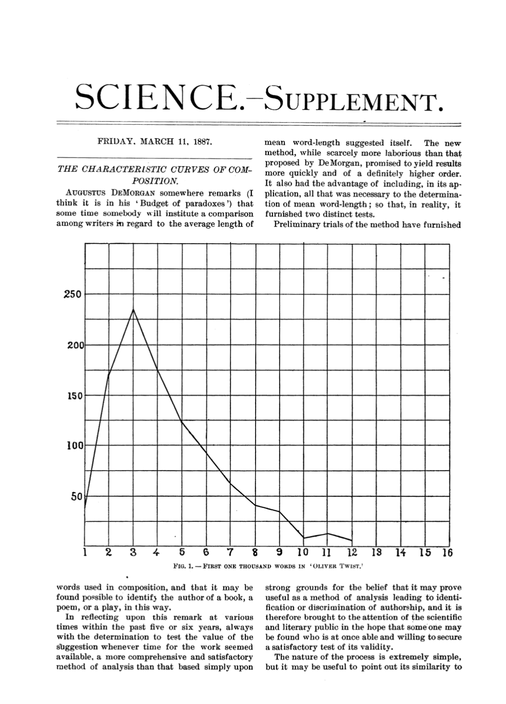
1887: Американский геофизик Томас К. Менденхолл проверил гипотезу о том, что длина слов может быть отличительной характеристикой писателей. Он изложил свои идеи в журнале Science.
1859: изобретен спектральный анализ
1901: Менденхолл публикует статью в Popular Science Monthly, в которой показывает, что “характеристическая кривая” Кристофера Марлоу…
…совпадает с Шекспиром примерно так же, как Шекспир совпадает с самим собой.
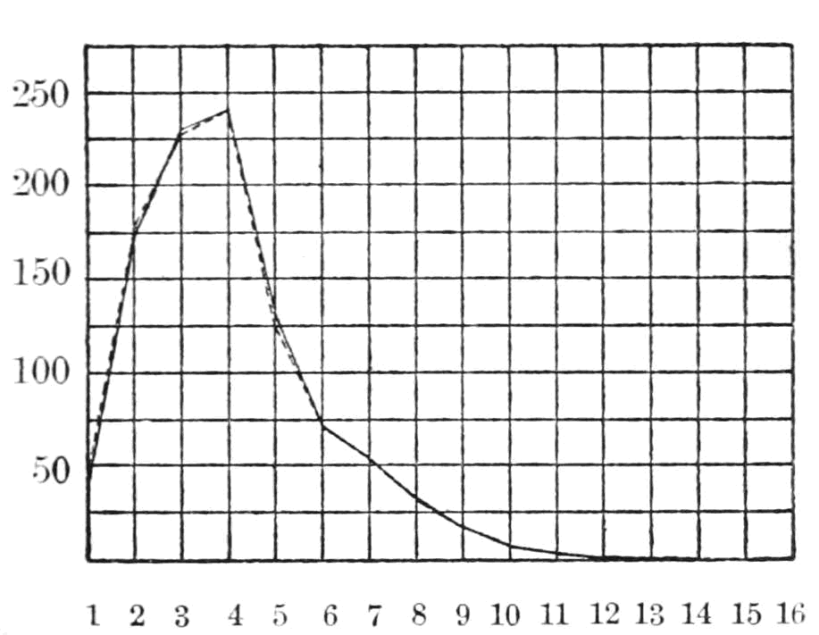 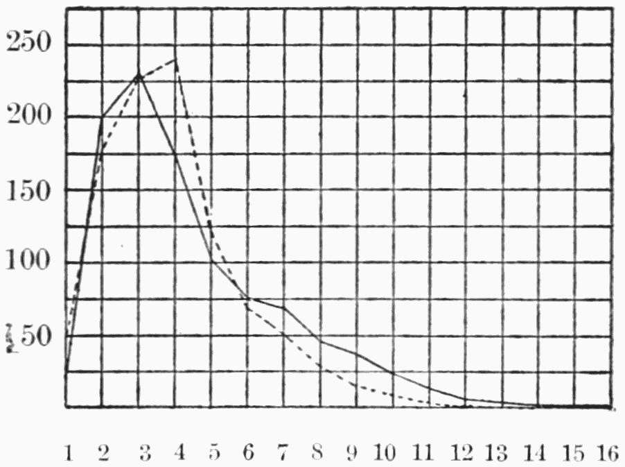
Тем временем в Европе…
1867: Льюис Кэмпбелл в предисловии к изданию “Софиста” и “Политика” датирует эти диалоги поздним периодом творчества Платона, опираясь на ряд количественных признаков.
1888: К. Риттер впервые собрал десятки различных признаков стиля, таких как вопросоответные формулы, частотность отдельных частиц, и т.п. Но у него нет инструментов многомерного анализа.
1897: Винценты Лютославский, обобщая предыдущие исследования, вывел “Закон стилистической близости”: \(A = x1 + 2*x2 + 3*x3 + 4*x4\)
Развитие статистических методов:
1939: Кембриджский статистик Д. У. Юл сравнил распределение длины предложения в работах Ф. Бэкона, C. Кольриджа, Ч. Лэма и Т. Б. Маколея и пришел к выводу, что авторское распределение длины предложений остается постоянным в довольно узких пределах.
1944: “характеристика Юла” для определения авторства трактата Imitatio Christi Фомы Кемпийского, который иногда приписывался канцлеру Парижского университета Жану Жерсону.
…в период между Менденхоллом и Юлом сама дисциплина статистики получила огромное развитие. Когда Менденхолл писал свои работы, еще не было устоявшихся методик, позволяющих определить, когда различия между разными явлениями являются существенными, а когда — просто результатом случайных колебаний… Еще не было четкого понимания, когда обобщения о больших совокупностях можно смело основывать на изучении сравнительно небольших выборок. — Э. Кенни (The Computation of Style, 1982)
Метод кумулятивных сумм
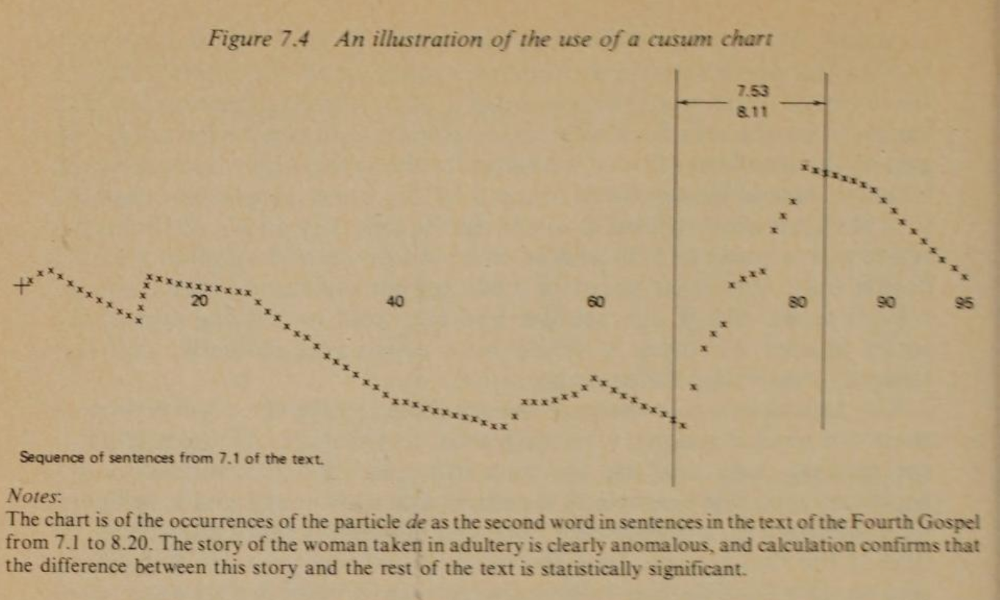Громкие “открытия” (и разоблачения)
1971: Э.Мортон и А.Винспир используют _cumsum_для исследования платоновского корпуса (It’s Greek to the Computer).
1978: Э.Мортон (Literary Detection) приходит к выводу, что только 4 послания ап. Павла являются подлинными.
1993: Неудачное выступление Мортона на британском телевидении.
Случай “Федералиста”
Спорный случай: “Записки федералиста”
1963: американские статистики Ф. Мостеллер и Д. Уоллес опубликовали статью “Inference in an Authorship Problem”», в которой успешно разрешили вопрос о том, кто написал 12 спорных памфлетов из “Записок федералиста”. Они использовали наиболее частотные слова и байесовский классификатор.
Их подход лежит в основе алгоримта МО, известного как “наивный Байес”. Он применяется для фильтрации спама и при определении эмоциональной тональности документов.
Дискриминантный анализ позволяет классифицировать объекты по двум или более группам, основываясь на линейной комбинации переменных, которая называется дискриминантной функцией:
\[DF = -0.5\cdot var_1 + 1.2\cdot var_2 + 0.85\cdot var_3\]
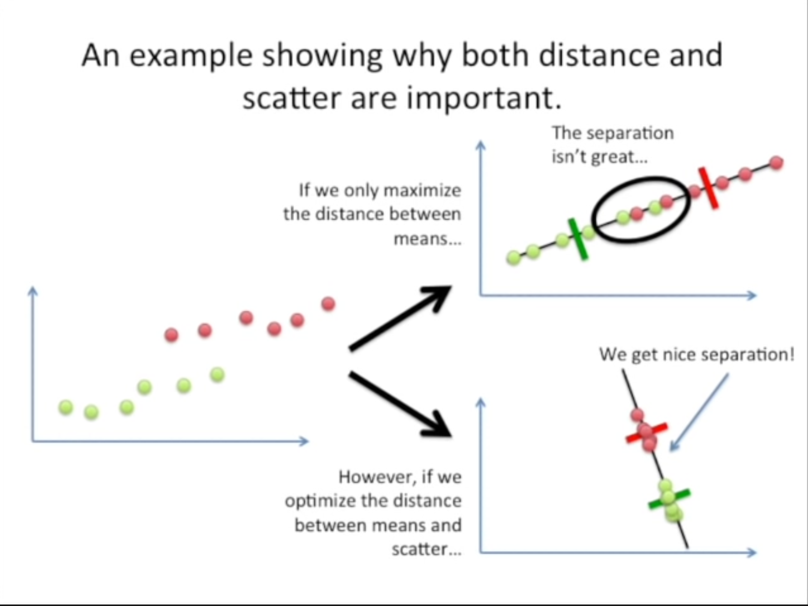Дискриминантная функция максимизируют различия между группами и минимизует дисперсию внутри группы по формуле: \(\frac{(\bar{x_1}-\bar{x_2})^2}{s^2_1+s^2_2}\). Каждому признаку присваивается вес. Чем больше числитель и чем меньше знаменатель, тем этот вес выше.
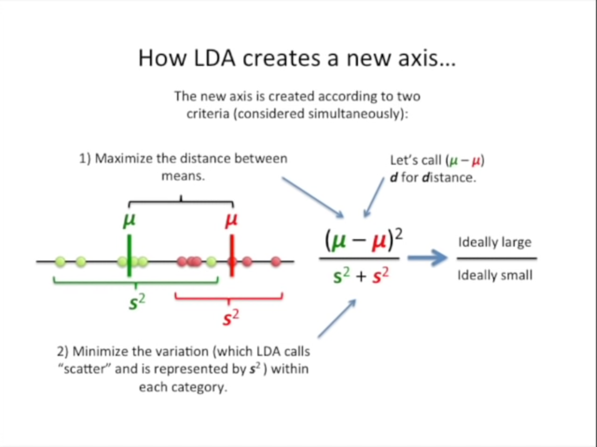Как это работает
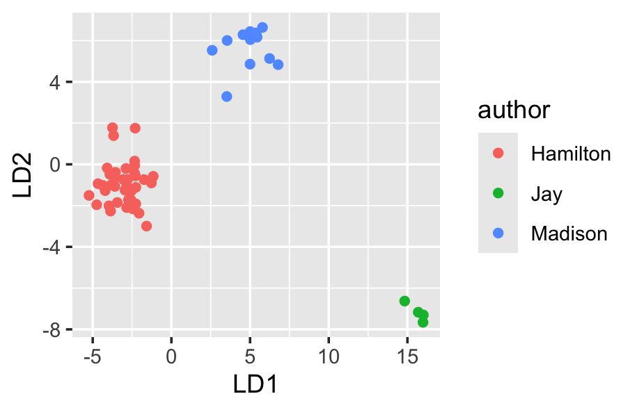NB: Современные имплементации алгоритма отличаются от метода, предложенного Р. Фишером в 1936 г.
Байесовские методы в стилометрии
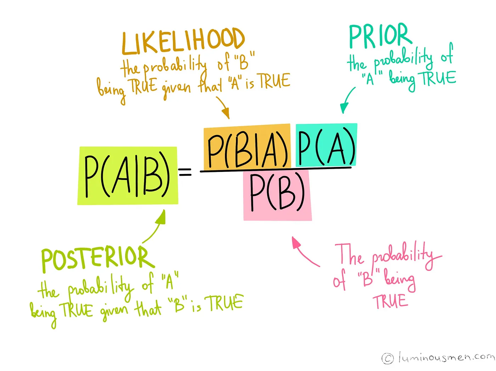
Формула Байеса позволяет «переставить причину и следствие»: по известному факту события вычислить вероятность того, что оно было вызвано данной причиной.
Задача: Вы обнаружили бабочку с редким орнаментом на крыльях. У исчезающих бабочек есть такой орнамент с вероятностью 0.99, а у обычных бабочек он встречается только в 2% случаев. При этом лишь 3% видов бабочек находятся на грани исчезновения. Какова вероятность, что бабочка относится к исчезающему виду?
Решение:
На место бабочки 🦋 можно подставить писателя ✍️, а на место узора - слова.
Но слов-признаков много, и нам нужно все учесть:
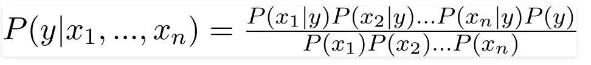
Знаменатель будет для всех групп одинаков, поэтому:
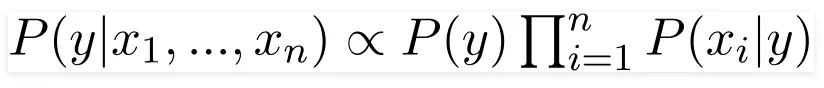
Отсюда название “наивный Байес”: перемножение вероятностей покоится на допущении их независимости.
(Источник.)
Вопрос: Что если в обучающем корпусе слово у какого-то автора не встречается?
Наивный Байес может плохо реагировать на присутствие коррелированных переменных (он же наивный!):
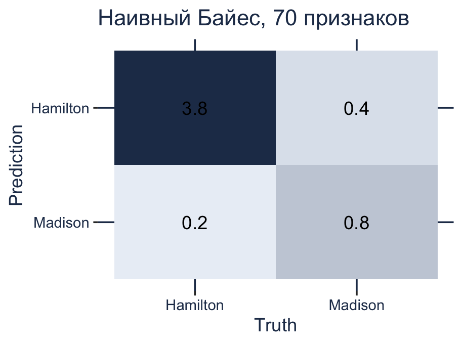 Источник данных.
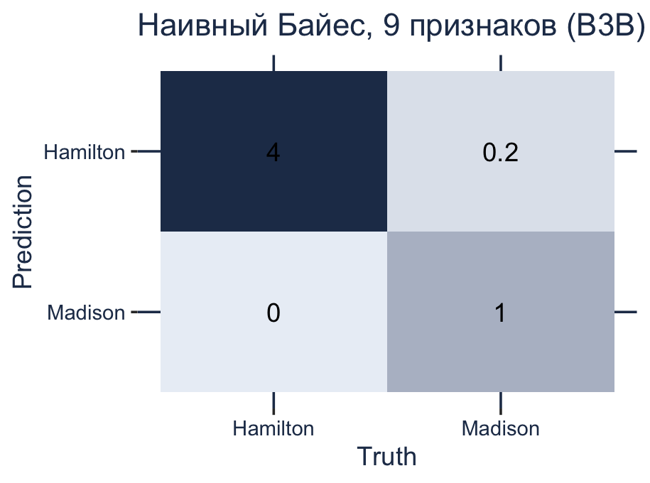
Линейно-дискриминантный анализ тоже достаточно привередливый:
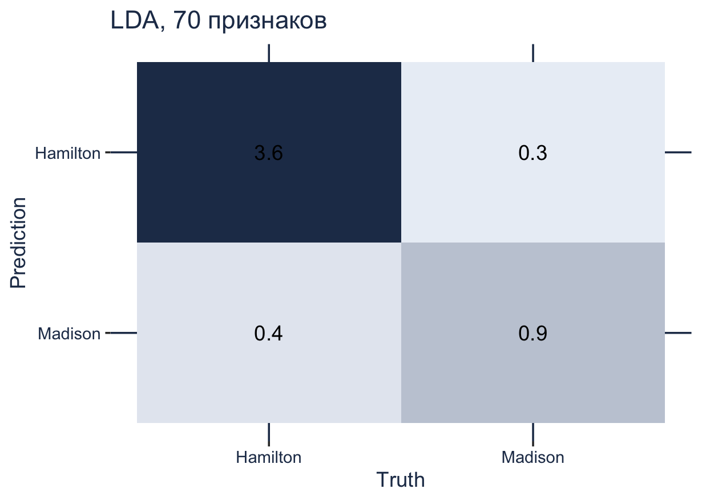
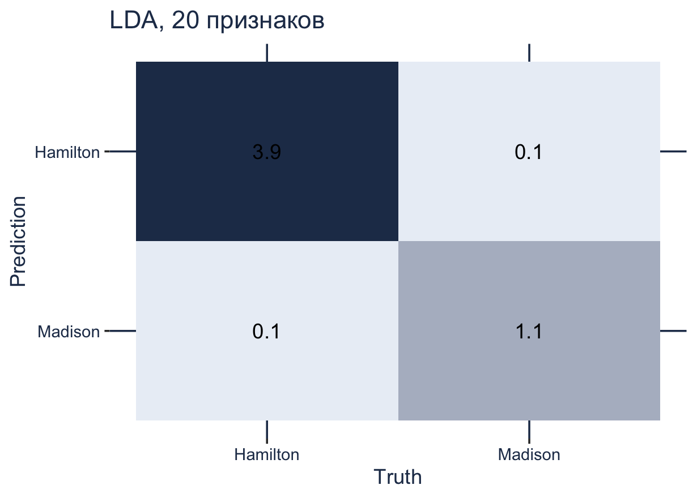
Ленивая Delta
2002: Джон Берроуз предлагает метод классификации под названием Delta.
Подробнее о том, как это работает, на очень простом примере.
Простой пример векторного пространства:
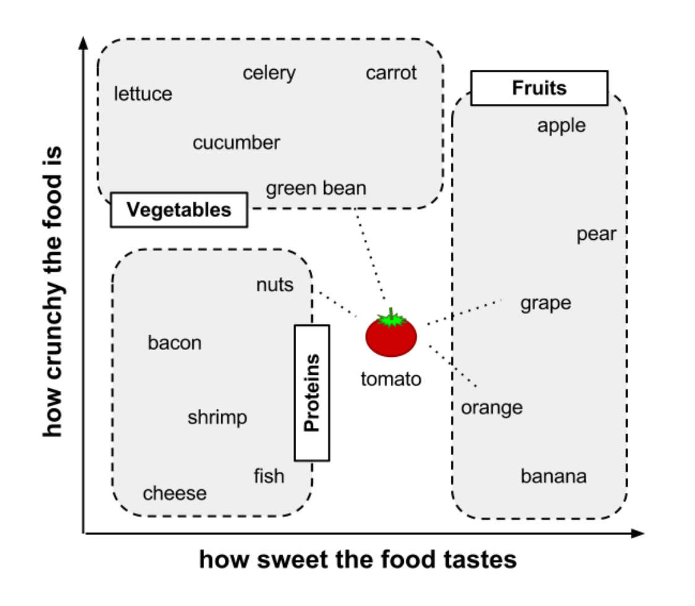Как считаются расстояния между векторами?
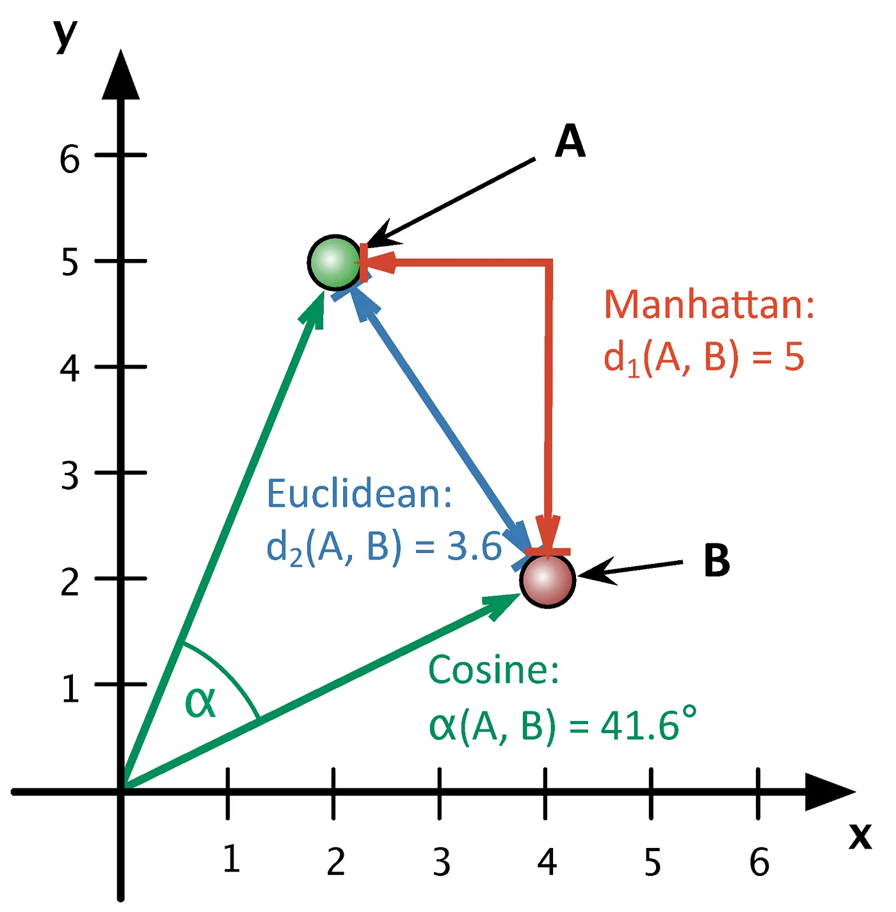Rolling Delta

Модификации Delta (доступны в Stylo):
- Берроуз: манхэттенское расстояние со стандартизацией
- Аргамон: евклидово расстояние
- Вюрцбургская Delta: косинусное сходство со стандартизацией
- Delta Эдера: манхэттенское расстояние на квадратах значений, и др.
Что еще можно настроить: 1. Число признаков 2. Culling
Классификация на основе расстояний применяется:
- в МО с учителем: k-NN, или метод k ближайших соседений;
- в МО без учителя (кластеризация).
k-NN – это мой любимый алгоритм, в котором для отнесения объекта к классу используется информация о его соседях.
- он очень простой (см. картинку с томатом);
- не делает допущений о характере распределения;
- хорошо справляется с многоклассовой классификацией и несбалансированными данными;
- работает с разными метриками расстояния.
Для демонстрации его возможностей воспользуемся датасетом Galbraith, в котором хранятся частотности для романов следующих авторов:
- Харлан Кобен — американский писатель, автор детективных романов-триллеров;
- К.С. Льюис со всей эпопеей про Нарнию;
- Дж.К. Роулинг и сами знаете кто 🧙;
- Дж.Р.Р. Толкиен тоже знаете с кем 💍;
- некто Роберт Галбрейт с “Зовом кукушки” .
И “Зов кукушки” уходит… Роулинг!
Работать с метриками расстояний можно безо всякого МО, но бывает полезно построить модель
- для оценки модели;
- настройки параметров 🛠.
Итоги
В этой лекции вы узнали:
- о начале
псевдонауки стилометрии; - о некоторых алгоритмах МО с учителем: линейно-дискриминантный анализ, наивный Байес, метод k ближайших соседей;
- о методах машинного обучения без учителя